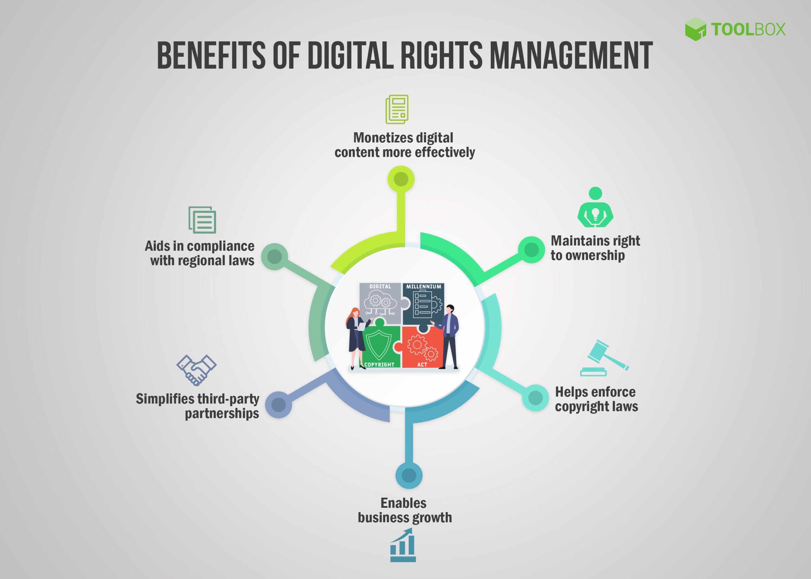

Why Is Encrypted Media Extensions Important?
Encrypted Media Extensions are important because they solve multiple long-standing problems in web development, digital security, content distribution, and user experience.
1. EME Enables Secure, Legal Playback of Copyrighted Content
The premium video platforms Netflix, Hulu, and Disney+ and Amazon Prime need to establish protection for their movies and TV shows against unauthorized copying. The previous system of browser plugins for DRM protection proved insecure because it faced continuous exploitation and failed to work with mobile devices. The EME system enables web browsers to protect encrypted content through secure processing which prevents users from accessing unencrypted media files thus strengthening media protection against piracy.
2. EME Improves User Experience by Eliminating Plugins
Legacy plugins required installation, constant updates, and were often buggy or incompatible with new operating systems. With EME, users can stream HD and 4K content in-browser instantly, without:
- pop-ups
- installation wizards
- performance issues
- plugin crashes
- mobile compatibility problems
This makes modern streaming fast, stable and seamless.
3. EME is Essential for Modern HTML5 Video
HTML5 video allows simple media playback, but premium content requires stronger protection. EME adds optional DRM support to HTML5 without changing the base standard. This preserves the open-web environment while still supporting studios that require DRM enforcement.
4. It Keeps the Web Competitive With Mobile Apps
Streaming applications like Netflix, HBO Max, or Spotify have always embedded DRM at the app level. Before EME, web browsers couldn't provide the same level of quality, protection, or trust. Now, websites can support:
- 1080p and 4K movies.
- HDR video
- offline licensing logic
- adaptive bitrate streaming
EME is one of the core reasons the web can compete with native apps.
5. It Ensures Interoperability Between Browsers and Companies
The API is standardized by the W3C, meaning:
- the same site can work across all major browsers
- developers don't need separate code for each DRM system
- content licensing rules remain consistent